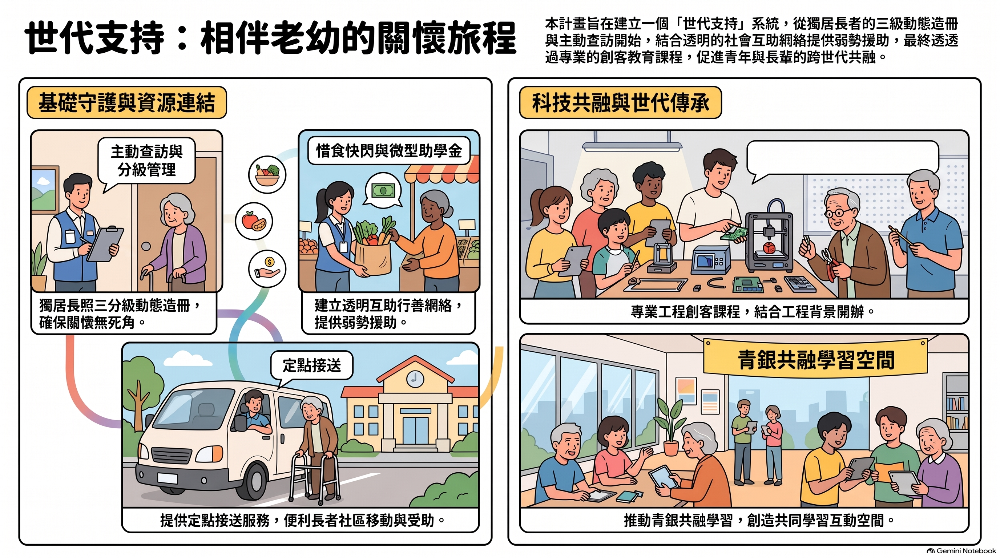

獨居長照關懷
- 動態造冊管理：落實「查訪、分級、造冊」三分級機制，精準掌握社區長輩的實際需求。
- 零死角貼心關懷：推動主動查訪與定點接送服務，讓長輩外出更安全、就醫更便利。
#三分級動態造冊
#定點接送
家人行善團
- 透明互助網絡：建立公開透明的行善平台與「惜食快閃發送網」，讓愛心資源快速且有效分配。
- 弱勢微型助學金：籌集並設立微型助學金，幫助弱勢學童，讓教育資源溫暖每個角落。
#透明行善
#惜食快閃
#微型助學金
創客學習共融
- 科技專業導入：結合自身工程專業，開辦 3D 列印與 IoT 物聯網創客班。
- 青銀跨世代共融：透過手作與科技學習打破年齡界線，讓青年與長輩共同動腦、動手體驗新科技。
#3D列印
#IoT創客班
#青銀共融
